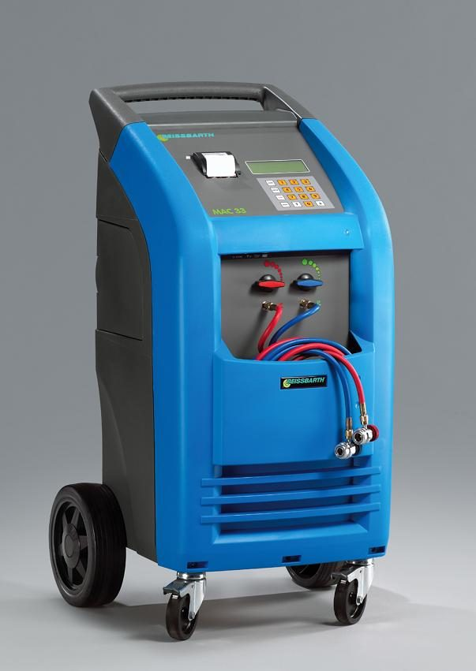

Poradňa autoservisu autoZ
Nefunguje klimatizácia v aute
Klimatizácia v aute nechladí, fúka teplý vzduch alebo nefúka vôbec? Najčastejšou príčinou je málo chladiva, no za poruchou môže byť aj kompresor, snímač, ventilátor či elektrika. Prehľad príčin a čo si môžete skontrolovať sami.

Klimatizáciu vypnite a dajte ju skontrolovať. Zadierajúci sa kompresor môže poškodiť alebo zhodiť remeň príslušenstva, ktorý poháňa aj alternátor.
S autom môžete jazdiť. Klimatizácia však vysušuje vzduch a odhmlieva okná – v zime a v daždi sa bez nej okná viac rosia.
Najčastejšie príčiny
| Príznak | Pravdepodobná príčina | Čo s tým |
|---|---|---|
| Chladí slabo, postupne horšie | málo chladiva – systém postupne stráca časť náplne | odsatie, test tesnosti, naplnenie |
| Nechladí vôbec, kompresor nezopína | veľký únik chladiva, snímač tlaku, poistka, relé, magnetická spojka kompresora | diagnostika a hľadanie úniku |
| Chladí len počas jazdy, v kolóne prestane | nebeží ventilátor chladiča, zanesený kondenzátor | kontrola ventilátora a kondenzátora |
| Z jednej strany fúka teplý, z druhej studený vzduch | servomotor klapky, nastavenie dvojzónovej klimatizácie, málo chladiva | diagnostika klimatizácie |
| Fúka slabo | upchatý kabínový filter, zanesený výparník | výmena filtra, čistenie |
| Nefúka vôbec alebo len na najvyšší stupeň | ventilátor kúrenia alebo jeho predradný odpor či regulátor | oprava ventilátora |
| Zápach z prieduchov | plesne a baktérie na výparníku | čistenie a dezinfekcia, nový filter |
| Hluk pri zapnutí klimatizácie | ložisko alebo spojka kompresora, remeň | kontrola kompresora |
Pri nízkych vonkajších teplotách kompresor zámerne nezopína. Ak klimatizácia nechladí len v chladnom počasí, nemusí ísť o poruchu.
Čo si môžete skontrolovať sami
- Pri bežiacom motore zapnite klimatizáciu a sledujte, či sa rozsvieti kontrolka A/C a či spod kapoty počuť cvaknutie zopnutia kompresora.
- Skontrolujte, či ventilátor kúrenia fúka na všetkých stupňoch a do všetkých smerov.
- Pozrite, či sa pri zapnutej klimatizácii roztočí ventilátor chladiča.
- Skontrolujte kabínový (peľový) filter – upchatý filter výrazne zníži prietok vzduchu.
- Pozrite kondenzátor pred chladičom – či nie je zanesený lístím, hmyzom alebo poškodený od kamienkov.
Plnenie klimatizácie nestačí, keď systém uniká
Pri servise klimatizácie sa chladivo odsaje, systém sa vákuuje a skontroluje sa, či drží tesnosť. Potom sa naplní presné množstvo chladiva podľa údaja výrobcu, ktorý býva na štítku pod kapotou. Ak systém uniká, samotné doplnenie vydrží len krátko – únik treba nájsť a opraviť. Najčastejšie uniká kondenzátor, hadice a tesnenia spojov.
Staršie autá používajú chladivo R134a, novšie R1234yf. Ktoré má vaše auto, je uvedené na štítku. Sprejové náplne z obchodu s prísadami na utesnenie neodporúčame – môžu poškodiť súčasti klimatizácie aj plniace zariadenie servisu.
Ako klimatizáciu udržať v dobrom stave
Zapínajte ju pravidelne aj v zime – olej v chladive premazáva tesnenia a kompresor. Kabínový filter meňte podľa intervalu výrobcu a pri zápachu dajte vyčistiť výparník. Ďalšie informácie o opravách nájdete na hlavnej stránke oprava-auta.sk.
Časté otázky
Prečo nefunguje klimatizácia v aute?
Najčastejšie je v systéme málo chladiva kvôli úniku. Ďalšími príčinami sú porucha kompresora alebo jeho spojky, snímač tlaku, poistka, ventilátor chladiča, upchatý kabínový filter alebo servomotor klapky.
Stačí klimatizáciu len doplniť?
Ak systém stratil len malú časť náplne za dlhší čas, plnenie pomôže. Ak uniká, doplnenie vydrží krátko – únik treba nájsť a opraviť.
Prečo klimatizácia chladí len počas jazdy?
Kondenzátor potrebuje prúd vzduchu. Keď auto stojí, zabezpečuje ho ventilátor chladiča. Ak nebeží alebo je kondenzátor zanesený, klimatizácia v kolóne prestane chladiť.
Prečo z klimatizácie zapácha?
Na vlhkom výparníku sa usádzajú plesne a baktérie. Pomôže čistenie a dezinfekcia výparníka a výmena kabínového filtra.
Kde v Trenčíne opravia klimatizáciu?
V autoservise autoZ na ulici gen. M. R. Štefánika 6670/19 v Trenčíne, pri Kauflande. Objednať sa môžete na 0910 606 999 alebo online na autoz.sk/rezervacia.
Súvisiace
← Oprava auta – úvodSúvisiace na autoz.sk
Potrebujete poradiť?
Zavolajte alebo sa objednajte online. Auto pozrieme v autoservise autoZ v Trenčíne.
autoZ – autoservis Zelman · gen. M. R. Štefánika 6670/19, 911 01 Trenčín (pri Kauflande)
0910 606 999 · Po–Pi 8:00–16:30 · www.autoz.sk